|
Marley & Me: Life and Love with the World's Worst Dog
John and Jenny were young and in love, with a perfect little house and not a care in the world. Then they brought home Marley, a wiggly yellow furball of a puppy—and their life would never be the same. Marley quickly grew into a barreling, ninety-seven-pound steamroller of a Labrador retriever who crashed through screen doors, flung drool on guests, stole women's undergarments, devoured couches and fine jewelry, and was expelled from obedience school. Yet Marley's heart was pure, and he remained a steadfast model of love and devotion for a growing family through pregnancy, birth, heartbreak, and joy, right to the inevitable goodbye. The Art of Community: Building the New Age of Participation
Author Jono Bacon offers a collection of experiences and observations from his decade-long involvement in building and managing communities, including his current position as manager for Ubuntu, arguably the largest community in open source software. You'll discover how a vibrant community can provide you with a reliable support network, a valuable source of new ideas, and a powerful marketing force. The Art of Community will help you: Develop a strategy, with specific objectives and goals, for building your communityBuild simple, non-bureaucratic processes to help your community perform tasks, work together, and share successesProvide tools and infrastructure that let contributors work quicklyCreate buzz around your community to get more people involvedTrack the community's work so it can be optimized and simplifiedExplore a capable, representative governance strategy for your communityIdentify and manage conflict, including dealing with divisive personalities Head First PMP: A Brain-Friendly Guide to Passing the Project Management Professional Exam
—Dennis Bolles, PMP DLB Associates, LLC and co-author of The Power of Enterprise-Wide Project Management "This looks like too much fun to be a PMP study guide! Behind the quirky humor and nutty graphics lies an excellent explanation of the project management processes. Not only will this book make it easier to pass the exam, you'll learn a lot of good stuff to use on the job too." —Carol Steuer, PMP and PMBOK(r) Guide, 3rd Edition Leadership Team "This is the best thing to happen to PMP since, well, ever. You'll laugh, learn, pass the exam, and become a better project manager all at the same time." — Scott Berkun, author of The Art of Project Management and The Myths of Innovation "Original, fresh, and fun... this is truly the perfect study companion for anyone aiming for PMP certification." —Teresa Simmermacher, PMP and Project Manager at Avanade "I love this format! Head First PMP covers everything you need to know to pass your PMP exam. The sound-bite format combined with the whimsical images turns a dry subject into entertainment. The organization starts with the basics then drills into the details. The in-depth coverage of complex topics like Earned Value and Quality Control are presented in an easy to understand format with descriptions, pictures, and examples. This book will not only help you pass the PMP, it should be used as an daily reference for practicing project managers. I sure wish I had this when I was studying for the exam." —Mike Jenkins, PMP, MBA "I think that under the fonts and formalized goofiness, the book has a good heart (intending to cover basic principles in an honest way rather than just to pass the test). Head First PMP attempts to educate potential project managers instead of being a mere "how to pass the PMP exam" book filled with test taking tips. This is truly something which sets it apart from the other PMP certification exam books." —Jack Dahlgren, Project Management Consultant "Head First PMP is a great tool to help make sense of the Project Management Body of Knowledge for the everyday Project Manager." —Mark Poinelli, PMP About the Book A PMP certification is more than just passing a test. It means that you have the knowledge to solve most common project problems, and proves that you know your stuff. Once you're certified, your projects are more likely to succeed because you have the skills and knowledge to make them successful. Not only that, it can mean a better job, more money, and greater respect from your peers. But studying for a difficult four-hour exam on project management isn't easy, even for experienced project managers. You want to remember everything that you're learning about project management, but your brain is working against you! Your brain craves novelty, and most PMP certification prep books are anything but novel. When you keep putting down a boring book instead of studying, it's because your brain doesn't think the information in it is worth learning. Your brain has more important stuff to think about, like how to keep you alive and out of danger-and it doesn't think that failing the PMP exam qualifies as life-threatening! So how do you trick your brain into thinking that your life does depend on learning everything you need to know to pass the PMP Exam? Head First PMP is the answer! Using the latest research in neurobiology, cognitive science and learning theory, Head First PMP has a visually rich format designed for the way your brain works-a multi-sensory experience that helps the material stick, not a text-heavy approach that puts you to sleep. Head First PMP offers 100% coverage of The PMBOK® Guide principles and certification objectives in a way that's engaging, not tedious. This book helps you prepare for the PMP certification exam with a unique method that goes beyond answers to specific questions and makes you think about the big picture of project management. By putting project management concepts into context, you will be able to understand, remember, and apply them-not just on the exam, but also on the job. With Head First PMP, you get the best of both worlds: a thorough and effective preparation guide for the PMP certification exam with hundreds of practice questions and exam strategies, along with puzzles, games, problems, exercises and the unique Head First approach that makes learning easy and entertaining. When you're done with Head First PMP, you'll know your stuff, you'll pass the exam, and you'll be able to bring everything you've learned to your job. php|architect's Guide to PHP Security|
Recently, the security bubble has expanded to touch the PHP world, and several well-known applications have been the target of a great number of attacks. Despite all the negative publicity, however, PHP is and remains a very stable—and very secure—programming environment. php|architect's Guide to PHP Security, written by security expert (and frequent php|architect contributor) Ilia Alshanetsky, provides you with a guide that covers everything you need to secure existing PHP applications and write new ones with security in mind. * Provides techniques for both PHP 4 and PHP 5 * Includes a step-by-step guide to securing your applications * Provides comprehensive coverage of security design * Teaches you how to defend yourself from hackers * Shows you how to distract hackers with a "tar pit" to help you fend off potential attacks Rather than drowning you in overlong explanations, this book focuses on providing you with accurate information on proper security techniques, and showing you a step-by-step approach to writing applications that are stable, secure and reliable. Head First PHP & MySQL
Building Social Web Applications: Establishing Community at the Heart of Your Site
If your company is ready to take part in the social web, this book will help you get started. Whether you're creating a new site from scratch or reworking an existing site, Building Social Web Applications helps you choose the tools appropriate for your audience so you can build an infrastructure that will promote interaction and help the community coalesce. You'll also learn about business models for various social web applications, with examples of member-driven, customer-service-driven, and contributor-driven sites. Determine who will be drawn to your site, why they'll stay, and who they'll interact withCreate visual design that clearly communicates how your site worksBuild the software you need versus plugging in one-size-fits-all, off-the-shelf appsManage the identities of your visitors and determine how to support their interactionMonitor demand from the community to guide your choice of new functionsPlan the launch of your site and get the message out PHP 5 Power Programming
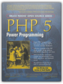
Andi Gutmans, Stig Bakken, Derick Rethans
Smarty PHP Template Programming And Applications
- Bring the benefits of Smarty to your PHP programming -Give your designers the power to modify content and layout without PHP programming -Produce code that is easier to debug, maintain, and modify -Useful for both Smarty developers and users Smarty is a templating engine for PHP. Designers who are used to working with HTML files can work with Smarty templates, which are HTML files with simple tags while programmers work with the underlying PHP code. The Smarty engine brings the code and templates together. The result of all this is that designers can concentrate on designing, programmers can concentrate on programming, and they don't need to get in each others way so much. Even if you are developing a site on your own, Smarty is a powerful way to make your code clearer to you and others, as well as easier to debug and modify later. This book is a comprehensive guide to all aspects of using Smarty. It will help you to: -Install and configure Smarty on your Web server - Understand how Smarty affects your web site architecture, and build site foundations that make the most of what Smarty offers - Designers will learn to work with templates that contain variables and logic, to modify layouts or content of Smarty web sites - See how Smarty caching can improve the performance of your sites - Develop custom Smarty functions and plug-ins to incorporate into your templates Using a step-by-step approach based on realistic examples, the expert authors show you how to use Smarty in your own PHP development. The book is ideal for PHP developers who are new to Smarty, and for web designers who are working with PHP developers who are using Smarty. php/architect's Guide to Date and Time Programming
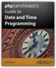
Derick Rethans
If your development involves working with dates and times, then this book is a must-have. In this book, Derick Rethans (contributor to PHP's core date extension and well-known PHP expert) explores in great detail the subtle nuances of working with dates and times. Frequently PHP developers encounter unexpected results that adversely affect their software and web applications. This book will undoubtedly help them tackle those issues. This book covers a variety of areas including: history of calendars and time standards, giving the reader a better understanding of how date/time concepts evolved into the way they are today parsing date/time strings and the potential pitfalls a developer can encounter timezones, the quirks inherent in them, and how your application can handle these quirks formatting and representing times and dates correctly and dealing with the DateTime Object manipulating and working with past, future and recurring dates obtaining dates when timestamps aren't available format specifiers upgrading the master timezone database What are PHP experts saying about this book? "Complex date and time programming isn't just for international applications. Even in the US, we have to deal with up to nine different time zones, and shifting between these can be difficult. Derick is one of the most knowledgeable people I know when it comes to date and time programming. I have turned to him countless times for help, and now he brings that depth of knowledge to this book. If you need to parse dates and times, shift between time zones, or manipulate dates and times in your applications then this book is for you." - Ben Ramsey "If you ever have to deal with parsing or formatting timestamps, or dealing with timezones this is the definite reference to make your time related PHP coding tasks fast and simple!" -Elizabeth Marie Smith This is the most comprehensive book on date/time data for PHP available, and one that any PHP developer can't do without.
php|architect's Zend PHP 5 Certification Study Guide
Essential PHP Security
Security is an issue that demands attention, given the growing frequency of attacks on web sites. "Essential PHP Security" explains the most common types of attacks and how to write code that isn't susceptible to them. By examining specific attacks and the techniques used to protect against them, you will have a deeper understanding and appreciation of the safeguards you are about to learn in this book. In the much-needed (and highly-requested) "Essential PHP Security," each chapter covers an aspect of a web application (such as form processing, database programming, session management, and authentication). Chapters describe potential attacks with examples and then explain techniques to help you prevent those attacks. Topics covered include: Preventing cross-site scripting (XSS) vulnerabilities Protecting against SQL injection attacks Complicating session hijacking attempts You are in good hands with author Chris Shiflett, an internationally-recognized expert in the field of PHP security. Shiflett is also the founder and President of Brain Bulb, a PHP consultancy that offers a variety of services to clients around the world. Pragmatic Version Control Using Git
Pragmatic Version Control Using Git starts with an overview of version control systems, and shows how being distributed enables you to work more efficiently in our increasingly mobile society. It then progresses through the basics necessary to get started using Git. You'll get a thorough overview of how to take advantage of Git. By the time you finish this book you'll have a firm grounding in how to use Git, both by yourself and as part of a team. Learn how to use how to use Git to protect all the pieces of your project Work collaboratively in a distributed environment Learn how to use Git's cheap branches to streamline your development Install and administer a Git server to share your repository Getting Started with Flex 3: An Adobe Developer Library Pocket Guide for Developers
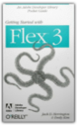
Jack Herrington, Emily Kim
Discover how easy RIA development can be with this one-of-a-kind handbook from the Adobe Developer Library. Several clear, step-by-step mini-tutorials teach you about web services, event handling, designing user interfaces with reusable components, and more. After finishing this guide, you'll be able to build Flash applications ranging from widgets to full-featured RIAs using the Flex SDK and Flex Builder 3.0. With Getting Started with Flex 3, you will: Walk through sample RIA projects and see examples of amazing applications people have built with Flex Work with ActionScript 3.0 and the MXML markup language Build user interfaces using the controls and tools available with the framework Get a tour of controls available commercially and through open source Learn how Flex integrates with ASP.NET, ColdFusion, PHP, and J2EE in the server Build Flex-based widgets that let you display real-time data Use advanced controls to build 3D graphs, data dashboards, mapping applications, and more You'll find complete code for video players, a slideshow, a chat client, and an RSS reader, just to name a few. You also get plenty of tips, tricks, and techniques to leverage your existing programming skills, whether you come from an open source or Visual Studio-intensive background.
Wikipedia: The Missing Manual
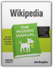
John Broughton
Wikipedia may be the biggest group writing project ever, but the one thing you won't find in the comprehensive online encyclopedia is easy-to-follow guidance on how to contribute. Wikipedia: The Missing Manual helps you avoid beginners' blunders and gets you sounding like a pro from your first edit.Conversation with John Broughton Author of Wikipedia: The Missing Manual What made you write the book? In November 2006 I started working on an index for editors of Wikipedia – a single page that had links to all relevant policies, guidelines, how-to pages, reference pages, tools, and other things that an editor might conceivably want to read. The more I worked on the index, the more I discovered of the complexity of editing Wikipedia. As the index developed, I realized that I had the basis for the book. I also realized, given how incredibly complex Wikipedia is, why there hadn’t yet been a book about editing Wikipedia. Why is your book especially important now? Wikipedia is immensely popular as a source of information. But it needs many more active editors than it has now, because it is so incomplete. It also needs many more editors who are experts in a particular subject matter. This book helps such potential editors avoid a lot of the mistakes that newcomers make, and shows them how to deal with various situations as they are encountered. What is the single most important thing readers of your book will be able to do after buying your book? Readers will be able to find specific things in Wikipedia that they’re particularly interested in editing, and other editors with the same interests. How important is the subject matter of your book? What do you think is on the horizon for your readers? I think as more and more people grow up computer-immersed, Wikipedia will become even more important, and the idea of editing it will be intimidating to an ever-increasing percentage of people. Someday perhaps chatting about recent Wikipedia editing experiences may be almost as common as talking about the weather or the traffic or sports. In researching the book, did you come across any surprising facts, figures, or statistics that the world might be interested in? Before I did the book, I had no idea that Wikimedia Commons – the central "stock photo" site for all language versions of Wikipedia – had more than 2 million images available for encyclopedia articles. I sometimes find the sheer volume of transactions at Wikipedia to be astonishing. 100 million article views per day. More than a quarter of a million edits per day. Several thousand new articles added every day. More than a thousand articles deleted every day. More than 7,000 new registered user accounts every day. And that’s just for the English language Wikipedia - the other 250+ non-English language versions combined are more than three times the size of the English Wikipedia. Then there’s this odd statistic: The vast majority of the more than 6 million registered user accounts have never actually done an edit. Perhaps that says something about how easy it is to register versus how easy it is to edit? Finally, I still find it astonishing that Wikipedia and the Commons and a bunch of sister projects (Wiktionary, Wikinews, Wikiquote, Wikisource, Wikispecies, Wikiversity, and Wikibooks), in all languages across the globe, are all being run by a non-profit foundation that has only a handful of employees and a budget of only a couple of million dollars per year. And that even includes developing and distributing – for free - the wiki software that all these projects run on. It shows what the Internet makes possible, given a good idea, inspired leadership, and the opportunity for everyone to contribute their time and knowledge. Amazon Exclusive: VIP Tips and Tricks: 1. You can dive right in and start editing without setting up a Wikipedia account (that is, getting a user name). However, there are advantages to having a user name - increased privacy, the ability to create new articles, and a personal user page, to name a few. 2. Sometimes editing an entire article at once is necessary - for example, if you're moving sections around, or moving text from one section to another. But those are usually exceptions; in general, it's better instead of clicking the "edit this page" tab, to click an "edit" link for a section that you want to edit. If you plan to edit two or three sections of an article, you can efficiently do these as separate edits of individual sections. Doing so helps you (previewing your edit is much easier), helps other editors (they can see exactly what sections you edited), and minimizes edit conflicts between you and other editors. 3. If you encounter vandalism and don't know how to do reverts, it's better to leave the vandalism in place and check back in ten minutes or so. (Refresh your browser, to make sure you're seeing the latest version of the page.) If the problematic text is still there, then go ahead and delete it, but make sure that your edit summary mentions something like "removing vandalism." The reason for waiting a bit is to see if another, more experienced editor can reverse the vandalizing edit, putting back into the article any text that was overwritten by the vandalism. 4. If you inadvertently add something to a page that you later decide shouldn't be there - a home address, a complaint about your employer, or other private information - you need to do more than just edit the page again and delete that information. Anyone visiting Wikipedia can still read the previous version of the page, a version where that information still exists, simply by going to the page history and opening that prior version. To make something completely inaccessible to other editors and readers, you have to ask an administrator to help. Type "WP:SELDEL" into the search box on the left for details. Even then, the problematic version of the page is still in the database, but only administrators can read it. 5. It's easy to add some information to a Wikipedia article - but if you want that information to stick around, to be there in a day or a month or year, it's critical that you cite the source of that information. The best way is a footnote; you can find out how to create one by typing "WP:CITE" into the search box on the left of your screen. But if that seems to complicated, then there are two easier options. If it’s from an online source, just add the URL, within squared brackets, at the end of the text you've added to an article, like this: [http://webpageaddress]. If it’s from an offline source like a book, go to the article talk page, start a new section (use the "+" tab), and type in the text plus information about the source (title, author, date of publication, page number, etc.) and add a comment that you'd appreciate another editor adding the information to the article. 6. Besides failing to cite a source, inexperienced editors often make two other big mistakes. One, they cut-and-paste large chunks of text into articles, which is a copyright violation, Two, they use information from what Wikipedia calls a "non-reliable" source: a discussion board, the blog of someone who isn't an acknowledged expert on the topic of the Wikipedia article, or a self-published book. (For more information about what Wikipedia considers reliable sources, type "WP:RS" into the search box on the left.) 7. Since January 2008, Wikipedia has had a new resource for intermediate and advanced editors (and yet one more place novice editors can use as a jumping-off place to find information) - the Editor's Index to Wikipedia. You can get to this via the shortcut "WP:EIW" (in the search box to the left, of course). 8. You as a reader may not find answers to some of your questions in Wikipedia articles because they're not really questions for an encyclopedia. For example, "What's a good camera to buy for someone who wants to be a professional photographer?" You can take those questions to the Reference desk (type the shortcut "WP:RD" in the search box on the left). This Wikipedia department is similar to a librarian service. (It's also a place where you can volunteer your question-answering expertise, if you're so inclined). 9. When you type a date, avoid using a format like "05-01-2007." In some countries that date would be May 1, 2007, in others it would be January 5, 2007. Remember that you’re editing the English Wikipedia, not the American Wikipedia. When Brits or Aussies or even Canadians write or interpret written information differently than Americans, then you should carefully design the information in an article so that no one -wherever in the world they happen to be from - is confused. 10. The Wikimedia Commons is the "stock photo" site for Wikipedias in all languages; it's where you should upload an image if you have one that you want to add to a Wikipedia article (or think someone else might find useful). But it's also a place where you can find millions of photos and other images, often quite unique and stunning, for your own personal use, at absolutely no cost. All you need to do is follow the licensing terms - for example, attributing a photo to the person who took it, if you share a photo with someone else. Webbots, Spiders, and Screen Scrapers: A Guide to Developing Internet Agents with PHP/CURL 2nd Edition
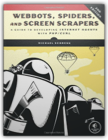
Michael Schrenk
Eaters of the Dead
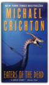
Michael Crichton
The year is A.D. 922. A refined Arab courtier, representative of the powerful Caliph of Baghdad, encounters a party of Viking warriors who are journeying to the barbaric North. He is appalled by their Viking customs—the wanton sexuality of their pale, angular women, their disregard for cleanliness . . . their cold-blooded human sacrifices. But it is not until they reach the depths of the Northland that the courtier learns the horrifying and inescapable truth: He has been enlisted by these savage, inscrutable warriors to help combat a terror that plagues them—a monstrosity that emerges under cover of night to slaughter the Vikings and devour their flesh . . .
The Rosetta Key: An Ethan Gage Adventure
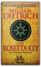
William Dietrich
American adventurer Ethan Gage barely escaped with his life from murderous thieves, survived a nerve-racking sea voyage and the deadly Egyptian sands when attached to Napoleon's army, and solved a five-thousand-year-old riddle with the help of a mysterious medallion.But that was child's play . . . The year is 1799. As Bonaparte's army descends upon Israel, intent upon conquest, Ethan Gage finds himself embroiled in an ancient mystery in the Holy Land, searching for a legendary Egyptian scroll imbued with awesome powers. The courageous and resourceful Gage must keep the mysterious document from his enemy, Napoleon—or, failing that, wrest it from him, even if it means pursuing his vengeful adversary back to France. And the wisdom of his great mentor, Benjamin Franklin, will offer Gage no solace should Bonaparte succeed in unlocking the terrible secrets of the Book of Thoth—for whoever masters its magic will rule the world. Skeleton Crew
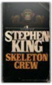
Stephen King
In the introduction to Skeleton Crew (1985), his second collection of stories, King pokes fun at his penchant for "literary elephantiasis," makes scatological jokes about his muse, confesses how much money he makes (gross and net), and tells a story about getting arrested one time when he was "suffused with the sort of towering, righteous rage that only drunk undergraduates can feel." He winds up with an invitation to a scary voyage: "Grab onto my arm now. Hold tight. We are going into a number of dark places, but I think I know the way."And he sure does. Skeleton Crew contains a superb short novel ("The Mist") that alone is worth the price of admission, plus two forgettable poems and 20 short stories on such themes as an evil toy monkey, a human-eating water slick, a machine that avenges murder, and unnatural creatures that inhabit the thick woods near Castle Rock, Maine. The short tales range from simply enjoyable to surprisingly good. In addition to "The Mist," the real standout is "The Reach," a beautifully subtle story about a great-grandmother who was born on a small island off the coast of Maine and has lived there her whole life. She has never been across "the Reach," the body of water between island and mainland. This is the story that King fans give to their friends who don't read horror in order to show them how literate, how charming a storyteller he can be. Don't miss it. —Fiona Webster From a Buick 8
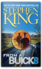
Stephen King
WANT TO GO FOR A RIDE...?In a secret shed behind the barracks of the Pennsylvania State Police, Troop D, there's a cherry Buick Roadmaster no one has touched in years — because there's more power under the hood than anyone can handle.... Everything's Eventual: 14 Dark Tales
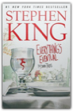
Stephen King
EVERYTHING'S EVENTUALFeatures the tale "1408," now a Dimension Films motion picture, starring John Cusack and Samuel L. Jackson. Also inside is the blockbuster eBook "Riding the Bullet," the original audio story "In the Deathroom," plus eleven more boundary-pushing fiction masterworks that will keep you awake until daybreak. Lisey's Story: A Novel
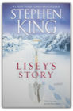
Stephen King
Lisey Debusher Landon lost her husband, Scott, two years ago, after a twenty-five-year marriage of the most profound and sometimes frightening intimacy. Scott was an award-winning, bestselling novelist and a very complicated man. Early in their relationship, before they married, Lisey had to learn from him about books and blood and bools. Later, she understood that there was a place Scott went — a place that both terrified and healed him, that could eat him alive or give him the ideas he needed in order to live. Now it's Lisey's turn to face Scott's demons, Lisey's turn to go to Boo'ya Moon. What begins as a widow's effort to sort through the papers of her celebrated husband becomes a nearly fatal journey into the darkness he inhabited. Perhaps King's most personal and powerful novel, Lisey's Story is about the wellsprings of creativity, the temptations of madness, and the secret language of love.
Just After Sunset: Stories
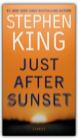
Stephen King
Stephen King — who has written more than fifty books, dozens of number one New York Times bestsellers, and many unforgettable movies — delivers an astonishing collection of short stories, his first since Everything's Eventual six years ago. As guest editor of the bestselling Best American Short Stories 2007, King spent over a year reading hundreds of stories. His renewed passion for the form is evident on every page of Just After Sunset. The stories in this collection have appeared in The New Yorker, Playboy, McSweeney's, The Paris Review, Esquire, and other publications.Who but Stephen King would turn a Port-O-San into a slimy birth canal, or a roadside honky-tonk into a place for endless love? A book salesman with a grievance might pick up a mute hitchhiker, not knowing the silent man in the passenger seat listens altogether too well. Or an exercise routine on a stationary bicycle, begun to reduce bad cholesterol, might take its rider on a captivating — and then terrifying — journey. Set on a remote key in Florida, "The Gingerbread Girl" is a riveting tale featuring a young woman as vulnerable — and resourceful — as Audrey Hepburn's character in Wait Until Dark. In "Ayana," a blind girl works a miracle with a kiss and the touch of her hand. For King, the line between the living and the dead is often blurry, and the seams that hold our reality intact might tear apart at any moment. In one of the longer stories here, "N.," which recently broke new ground when it was adapted as a graphic digital entertainment, a psychiatric patient's irrational thinking might create an apocalyptic threat in the Maine countryside...or keep the world from falling victim to it. Just After Sunset — call it dusk, call it twilight, it's a time when human intercourse takes on an unnatural cast, when nothing is quite as it appears, when the imagination begins to reach for shadows as they dissipate to darkness and living daylight can be scared right out of you. It's the perfect time for Stephen King. Blaze: A Novel
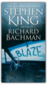
Richard Bachman
Once upon a time, a fellow named Richard Bachman wrote Blaze on an Olivetti typewriter, then turned the machine over to Stephen King, who used it to write Carrie. Bachman died in 1985 ("cancer of the pseudonym"), but this last gripping Bachman novel resurfaced after being hidden away for decades — an unforgettable crime story tinged with sadness and suspense.Clayton Blaisdell, Jr., was always a small-time delinquent. None too bright either, thanks to the beatings he got as a kid. Then Blaze met George Rackley, a seasoned pro with a hundred cons and one big idea. The kidnapping should go off without a hitch, with George as the brains behind their dangerous scheme. But there's only one problem: by the time the deal goes down, Blaze's partner in crime is dead. Or is he?Includes a previously uncollected story, "Memory" — the riveting opening to Stephen King's new Scribner hardcover novel, Duma Key.
The Sacred Bones
In Italy, American forensic scientist Charlotte Hennesey has answered a Vatican summons asking for help. Joining with Italian anthropologist Giovanni Bersei, she embarks upon a perilous journey down a twisted path of revelations prowled by sinister zealots and relentless cold killers. For they must expose the astonishing secrets locked in the ancient bones resting in a newly unearthed burial box—the skeleton of a man who lived and died in the first century; a man who was scourged and stabbed . . . and crucified. Airframe
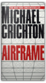
Michael Crichton
Cruising 35,000 feet above the earth, a twin-engine commercial jet encounters an accident that leaves 3 dead, 56 wounded, and the cabin in shambles. What happened? With a multi-billion-dollar company-saving deal on the line, Casey Singleton is sent by her hard-driving boss to uncover the mysterious circumstances that led to the disaster before more people die. But someone doesn't want her to find the truth. Airframe bristles with authentic information, technical jargon, and the command of detail Crichton's readers have come to expect. Check out Amazon.com's Airframe feature and read an excerpt from the book!
Timeline
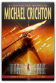
Michael Crichton
When you step into a time machine, fax yourself through a "quantum foam wormhole," and step out in feudal France circa 1357, be very, very afraid. If you aren't strapped back in precisely 37 hours after your visit begins, you'll miss the quantum bus back to 1999 and be stranded in a civil war, caught between crafty abbots, mad lords, and peasant bandits all eager to cut your throat. You'll also have to dodge catapults that hurl sizzling pitch over castle battlements. On the social front, you should avoid provoking "the butcher of Crecy" or Sir Oliver may lop your head off with a swoosh of his broadsword or cage and immerse you in "Milady's Bath," a brackish dungeon pit into which live rats are tossed now and then for prisoners to eat.This is the plight of the heroes of Timeline, Michael Crichton's thriller. They're historians in 1999 employed by a tech billionaire-genius with more than a few of Bill Gates's most unlovable quirks. Like the entrepreneur in Crichton's Jurassic Park, Doniger plans a theme park featuring artifacts from a lost world revived via cutting-edge science. When the project's chief historian sends a distress call to 1999 from 1357, the boss man doesn't tell the younger historians the risks they'll face trying to save him. At first, the interplay between eras is clever, but Timeline swiftly becomes a swashbuckling old-fashioned adventure, with just a dash of science and time paradox in the mix. Most of the cool facts are about the Middle Ages, and Crichton marvelously brings the past to life without ever letting the pulse-pounding action slow down. At one point, a time-tripper tries to enter the Chapel of Green Death. Unfortunately, its custodian, a crazed giant with terrible teeth and a bad case of lice, soon has her head on a block. "She saw a shadow move across the grass as he raised his ax into the air." I dare you not to turn the page! Through the narrative can be glimpsed the glowing bones of the movie that may be made from Timeline and the cutting-edge computer game that should hit the market in 2000. Expect many clashing swords and chase scenes through secret castle passages. But the book stands alone, tall and scary as a knight in armor shining with blood. —Tim Appelo State of Fear
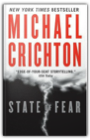
Michael Crichton
Amazon.com Exclusive ContentA Michael Crichton Timeline Amazon.com reveals a few facts about the "father of the techno-thriller." 1942: John Michael Crichton is born in Chicago, Illinois on Oct. 23. 1960: Crichton graduates from Roslyn High School on Long Island, New York, with high marks and a reputation as a star basketball player. He decides to attend Harvard University to study English. During his studies, he rankles under his writing professors' criticism. As an act of rebellion, Crichton submits an essay by George Orwell as his own. The professor doesnt catch the plagiarism and gives Orwell a B-. This experience convinces Crichton to change his field of study to anthropology. 1964: Crichton graduates summa cum laude from Harvard University in anthropology. After studying further as a visiting lecturer at Cambridge University and receiving the Henry Russell Shaw Travelling Fellowship, which allowed him to travel in Europe and North Africa, Crichton begins coursework at the Harvard School of Medicine. To help fund his medical endeavors, he writes spy thrillers under several pen names. One of these works, A Case of Need, wins the 1968 Mystery Writers of America's Edgar Allan Poe Award. 1969: Crichton graduates from Harvard Medical school and is accepted as a post-doctoral fellow at the Salk Institute for Biological Science in La Jolla, Calif. However, his career in medicine is waylaid by the publication of the first novel under his own name, The Andromeda Strain. The novel, about an apocalyptic plague, climbs high on bestseller lists and is later made into a popular film. Crichton said of his decision to pursue writing full time: "To quit medicine to become a writer struck most people like quitting the Supreme Court to become a bail bondsman." 1972: Crichton's second novel under his own name The Terminal Man, is published. Also, two of Crichton's previous works under his pen names, Dealing and A Case of Need are made into movies. After watching the filming, Crichton decides to try his hand at directing. He will eventually direct seven films including the 1973 science-fiction hit Westworld, which was the first film ever to use computer-generated effects. 1980: Crichton draws on his anthropology background and fascination with new technology to create Congo, a best-selling novel about a search for industrial diamonds and a new race of gorillas. The novel, patterned after the adventure writings of H. Ryder Haggard, updates the genre with the inclusion of high-tech gadgets that, although may seem quaint 20 years later, serve to set Crichton's work apart and he begins to cement his reputation as "the father of the techno-thriller." 1990: After the 1980s, which saw the publication of the underwater adventure Sphere (1987) and an invitation to become a visiting writer at the Massachusetts Institute of Technology (1988), Crichton begins the new decade with a bang via the publication of his most popular novel, Jurassic Park. The book is a powerful example of Crichton's use of science and technology as the bedrock for his work. Heady discussion of genetic engineering, chaos theory, and paleontology run throughout the tightly-wound thriller that strands a crew of scientists on an island populated by cloned dinosaurs run amok. The novel inspires the 1993 Steven Spielberg film, and together book and film will re-ignite the worlds fascination with dinosaurs. 1995: Crichton resurrects an idea from his medical school days to create the Emmy-Award Winning television series ER. In this year, ER won eight Emmys and Crichton received an award from the Producers Guild of America in the category of outstanding multi-episodic series. Set in an insanely busy an often dangerous Chicago emergency room, the fast-paced drama is defined by Crichton's now trademark use of technical expertise and insider jargon. The year also saw the publication of The Lost World returning readers to the dinosaur-infested island. 2000: In recognition for Crichton's contribution in popularizing paleontology, a dinosaur discovered in southern China is named after him. "Crichton's ankylosaur" is a small, armored plant-eating dinosaur that dates to the early Jurassic Period, about 180 million years ago. "For a person like me, this is much better than an Academy Award," Crichton said of the honor. 2004: Crichtons newest thriller State of Fear is published. Amazon.com's Significant Seven Michael Crichton kindly agreed to take the life quiz we like to give to all our authors: the Amazon.com Significant Seven. Q: What book has had the most significant impact on your life? A: Prisoners of Childhood by Alice Miller Q: You are stranded on a desert island with only one book, one CD, and one DVD—what are they? A: Tao Te Ching by Lao Tzu (Witter Bynner version) Symphony #2 in D Major by Johannes Brahms (Georg Solti) Ikiru by Akira Kurosawa Q: What is the worst lie you've ever told? A: Surely you're joking. Q: Describe the perfect writing environment. A: Small room. Shades down. No daylight. No disturbances. Macintosh with a big screen. Plenty of coffee. Quiet. Q: If you could write your own epitaph, what would it say? A: I don't want an epitaph. If forced, I would say "Why Are You Here? Go Live Your Life." Q: Who is the one person living or dead that you would like to have dinner with? A: Benjamin Franklin Q: If you could have one superpower what would it be? A: Invisibility Rising Sun: A Novel
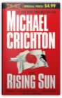
Michael Crichton
During the grand opening celebration of the new American headquarters of an immense Japanese conglomerate, the dead body of a beautiful woman is found. The investigation begins, and immediately becomes a headlong chase through a twisting maze of industrial intrigue and a violent business battle that takes no prisoners.
Prey
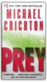
Michael Crichton
In the Nevada desert, an experiment has gone horribly wrong. A cloud of nanoparticles—micro-robots—has escaped from the laboratory. This cloud is self-sustaining and self-reproducing. It is intelligent and learns from experience. For all practical purposes, it is alive.It has been programmed as a predator. It is evolving swiftly, becoming more deadly with each passing hour. Every attempt to destroy it has failed. And we are the prey. Terminal Man
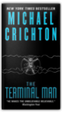
Michael Crichton
Harry Benson is prone to violent, uncontrollable seizures and is under police guard after attacking two people. Dr. Roger McPherson, head of the prestigious Neuropsychiatric Research Unit at University Hospital in Los Angeles, is convinced he can cure Benson through a procedure called Stage Three. During this highly specialized experimental surgery, electrodes will be placed in the patient's brain, sending monitored, soothing pulses to its pleasure canyons. But though the operation is a success, there is an unforeseen development. Benson learns how to control the pulses and is increasing their frequency. He escapes—a homicidal maniac loose in the city—and nothing will stop his murderous rampages or impede his deadly agenda . . .
Pirate Latitudes LP: A Novel
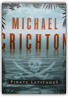
Michael Crichton
From one of the best-loved authors of all time comes an irresistible adventure of swashbuckling pirates in the New World, a classic story of treasure and betrayal.The Caribbean, 1665. A remote colony of the English Crown, the island of Jamaica holds out against the vast supremacy of the Spanish empire. Port Royal, its capital, is a cutthroat town of taverns, grog shops, and bawdy houses. In this steamy climate there's a living to be made, a living that can end swiftly by disease—or by dagger. For Captain Charles Hunter, gold in Spanish hands is gold for the taking, and the law of the land rests with those ruthless enough to make it. Word in port is that the galleon El Trinidad, fresh from New Spain, is awaiting repairs in a nearby harbor. Heavily fortified, the impregnable harbor is guarded by the bloodthirsty Cazalla, a favorite commander of the Spanish king himself. With backing from a powerful ally, Hunter assembles a crew of ruffians to infiltrate the enemy outpost and commandeer El Trinidad, along with its fortune in Spanish gold. The raid is as perilous as the bloodiest tales of island legend, and Hunter will lose more than one man before he even sets foot on foreign shores, where dense jungle and the firepower of Spanish infantry stand between him and the treasure. . . . Pirate Latitudes is Michael Crichton at his best: a rollicking adventure tale pulsing with relentless action, crackling atmosphere, and heart-pounding suspense. Desperation
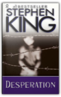
Stephen King
A notice to those who feel that Stephen King has lost his magic touch: Desperation is the genuine goods. The ensemble cast of ordinary Americans thrown together by chance, including a disgruntled alcoholic writer and a child who is wise beyond his years, may be a bit too familiar. But the nearly deserted Nevada mining town with an enormous haunted mine pit and an abandoned movie theatre where the survivors hang out makes for a striking battleground, and the grisly action rarely flags. Best of all, though, are the characters of Tak, the ancient body-hopping evil who emerges from the mine, and of "God"—whom the New York Times describes as "the edgiest creation in Desperation. Remote, isolated, ironic, shrouded behind disguises, perhaps 'another legendary shadow,' this deity forms a sly foil, and an icy mirror, to Tak."
Bag of Bones
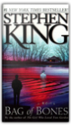
Stephen King
Here is Stephen King's most gripping and unforgettable novel — a tale of grief and lost love's enduring bonds, of haunting secrets of the past, and of an innocent child caught in a terrible crossfire.Four years after the sudden death of his wife, forty-year-old bestselling novelist Mike Noonan is still grieving. Unable to write, and plagued by vivid nightmares set at the western Maine summerhouse he calls Sara Laughs, Mike reluctantly returns to the lakeside getaway. There, he finds his beloved Yankee town held in the grip of a powerful millionaire, Max Devore, whose vindictive purpose is to take his three-year-old granddaughter, Kyra, away from her widowed young mother, Mattie. As Mike is drawn into Mattie and Kyra's struggle, as he falls in love with both of them, he is also drawn into the mystery of Sara Laughs, now the site of ghostly visitations and escalating terrors. What are the forces that have been unleashed here — and what do they want of Mike Noonan? It is no secret that King is one of our most mesmerizing storytellers. In Bag of Bones, he proves to be one of our most moving as well. Roadwork
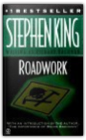
Stephen King
They're tearing down Bart Dawes's home, leveling his memories, and destroying his past, all for a new highway extension. Funny what that kind of progress can do to a man. Scary, too.
The Running Man
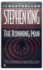
Stephen King
Stephen King (writing as Richard Bachman) crafted The Running Man early in his career, though after such mega-hits as Carrie and The Shining. A bit of a departure from the supernatural horror that is most frequently associated with his work, the novel describes a science fiction dystopia where market capitalism and television game shows have spiraled out of control, and the separation between the haves and the have-nots has been formalized with separate currencies. King establishes characters quickly, creating sympathy in the first few pages for Ben Richards—whose 18-month-old baby girl is suffering from a horrible cough, perhaps pneumonia. Not able to afford medicine, Richards enters himself in the last-chance money-making scheme of the Free-Vee games. The games include Treadmill to Bucks, in which heart-attack prone contestants struggle to outlast a progressively demanding treadmill, or the accurately named Swim the Crocodiles. After a rigorous battery of physical and mental examinations, Richards is assigned "Elevator Six"—the path of a chosen few—that leads to The Running Man game. In this game, the stakes and the prizes are raised. Success means a life of luxury. Failure means death. Unfortunately, few ever win the game; in fact, as the producer tells Richards, in six years no one has survived.The Running Man is a short book, tightly written to be read and enjoyed quickly. The future world it depicts is vividly captured with a few essential details. The action is also fast paced and, though the novel differs from much of King's other work, the sardonic social commentary reveals a pleasing glimmer of King's characteristically twisted sense of humor. —Patrick O'Kelley Four Blind Mice
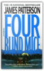
James Patterson
In this latest thriller from perennial bestselling author James Patterson, Washington cop Alex Cross gets involved in his partner's effort to save the life of an old Army buddy who's facing execution for a horrendous and inexplicable murder spree in North Carolina. The Army's evidence against Sergeant Ellis Cooper, a decorated Vietnam vet, is overwhelming, which isn't surprising since it's all been planted by a quartet of killers whose reason for framing the erstwhile hero isn't revealed until long after they are. The big secret is who set the murderers loose, and in true cliffhanger fashion, Patterson keeps it under wraps until the very end. Meanwhile, his usual blend of action, violence, fast pacing and uninspired-though-serviceable prose prevail, and will probably do so all the way to the top of the bestseller lists. —Jane Adams
The Long Walk
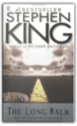
Stephen King
On the first day of May, one hundred teenage boys meet for an event known throughout the country as "The Long Walk." If you break the rules, you get three warnings. If you exceed your limit, what happens is absolutely terrifying.
The Last Oracle
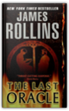
James Rollins
In Washington, D.C., a homeless man takes an assassin's bullet and dies in Commander Gray Pierce's arms. A bloody coin clutched in the dead man's hand—an ancient relic that can be traced back to the Greek Oracle of Delphi—is the key to a conspiracy that dates back to the Cold War and threatens the very foundation of humanity. For what if it were possible to bioengineer the next great prophet—a new Buddha, Muhammad, or even Jesus? Would this Second Coming be a boon . . . or would it initiate a chain reaction that would result in the extinction of humankind?Vital seconds are ticking rapidly away as Pierce races across the globe in search of answers, one step ahead of ruthless killers determined to reclaim the priceless artifact. Suddenly the future of all things is balanced on the brink between heaven and hell—and salvation or destruction rests in the hands of remarkable children. The Andromeda Strain
Two years later, seventeen satellites are sent into the outer fringes of space to "collect organisms and dust for study." One of them falls to earth, landing in a desolate area of Arizona. Twelve miles from the landing site, in the town of Piedmont, a shocking discovery is made: the streets are littered with the dead bodies of the town's inhabitants, as if they dropped dead in their tracks. The terror has begun . . . The Silmarillion
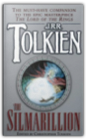
J.R.R. Tolkien
"Majestic!...readers of THE HOBBIT and THE LORD OF THE RINGS...will find THE SILMARILLION a cosmology to call their own...medieval romances, fierce fairy tales and fiercer wars that ring with heraldic fury...it overwhelms the reader."TIME Those interested in J.R.R. Tolkien's Middle Earth should not be without this grand volume that tells the tragic tale of the struggle for control of the Silmarils, a struggle that would determine the history of the world long before the War of the Ring. Next
We live in a time of momentous scientific leaps, a time when it's possible to sell our eggs and sperm online for thousands of dollars and to test our spouses for genetic maladies. We live in a time when one fifth of all our genes are owned by someone else, and an unsuspecting person and his family can be pursued cross-country because they happen to have certain valuable genes within their chromosomes . . . Devilishly clever, Next blends fact and fiction into a breathless tale of a new world where nothing is what it seems and a set of new possibilities can open at every turn. Next challenges our sense of reality and notions of morality. Balancing the comic and the bizarre with the genuinely frightening and disturbing, Next shatters our assumptions and reveals shocking new choices where we least expect. The future is closer than you think. Unfinished Tales: The Lost Lore of Middle-earth
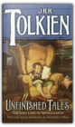
J.R.R. Tolkien
An extraordinary discovery is waiting for you on these pages. Mythic lore and forgotten legends unearthed by Christopher Tolkien from his father's archives unveil never-before-told stories of the three ages of ancient Middle-earth.
Deception Point
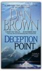
Duma Key
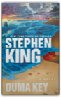
Stephen King
php/architect's Guide to PHP 5 Migration
|